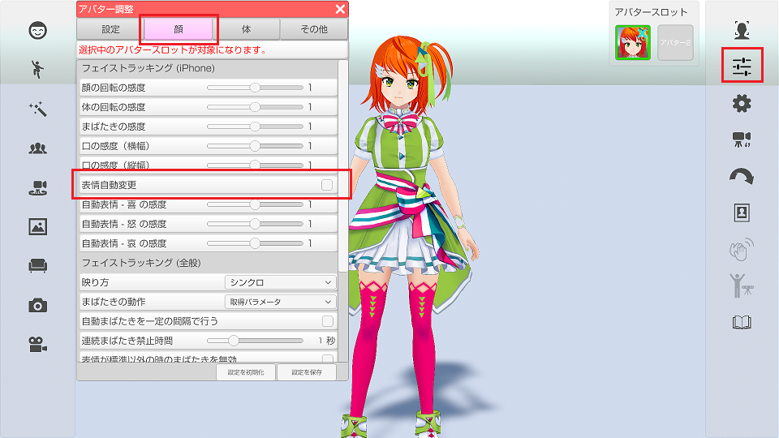
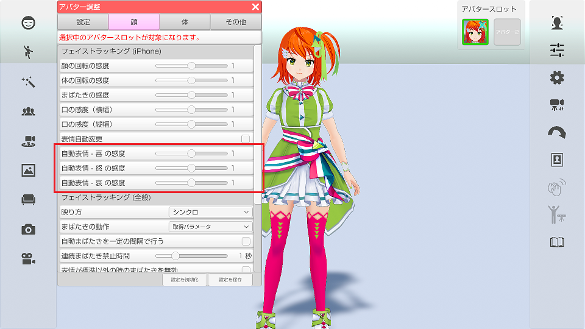

iPhoneX の高精度なフェイストラッキングを使う事で演者の表情を読み取り、
アバターの表情を「楽しい(Joy)、怒り(Angry)、悲しい(Sorrow)」に変更します。
VRoidStudio 以外で作成した VRM モデルは
VRM 標準の Joy、Angry、Sorrow の表情が存在している必要があります。
最初に iPhone でフェイストラッキングが動作する事を確認してください。
iPhoneXによるフェイストラッキングについて
アバター調整 → 「顔」タブ → 「表情自動実行」にチェックを付けます。

iPhoneX フェイストラッキングを開始します。
表情認識は下記を意識して表情を作ると操作しやすくなります。
Joy → 広角を広げる
Angry → まゆげを下げる
Sorrow → まゆげを上げる
認識がうまく行われない場合は感度を変更する事で改善します。

自動表情変更が有効な状態で口を動かすと
表情の口設定と競合して正常な口の形状にならない場合があります。
（VRM モデルの作り方によって影響度が違います。）
VRoidStudio で作成したモデルに対しては対策を行っているので競合は起きませんが、
モデリングソフトで独自に作成した VRM モデルはこの問題の対象となります。
自動表情変更で使用する表情のカスタム設定をVRMに追加します。
Unity で VRM に下記の名前の BlendShape を追加する事によって競合を回避可能となります。
また、自動表情変更で使用する表情をカスタムしたい場合も下記の名前で BlendShape を作成してください。
(作成した BlendShape が優先となります。)
3tene 拡張の 口閉じ版の作り方を参照してください。